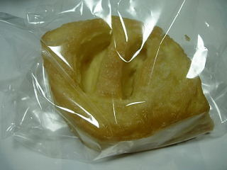
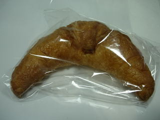
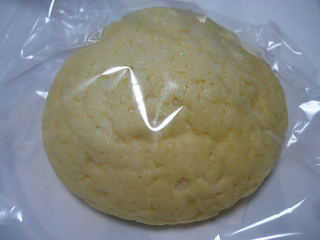

安佐SA（上り）のレモンパイ
2009/8/23
サービスエリアのパン屋さんでパンを買いました。売り場が広くないので、パンの種類は沢山ないですが、すぐ横のガラス越しでパンを焼いているのを見たら、美味しそうで買ってしまいました。
レモンパイです。見た目が綺麗ですね。

レモン味の爽やかもしっかりあるんですが、クリームの甘さもちゃんとあり、美味しかったです。ふんわりとしているパイですが、パンクズがポロポロ落ちなくて食べ易かったです。

クロワッサンも食べやすかったです。

メロンパンも綺麗でした。